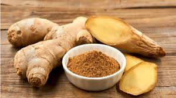

Jahe (Zingiber officinale), adalah tanaman rimpang yang sangat populer sebagai rempah-rempah dan bahan obat. Rimpangnya berbentuk jemari yang menggembung di ruas-ruas tengah. Rasa dominan pedas disebabkan senyawa keton bernama zingeron.
Jahe termasuk suku Zingiberaceae (temu-temuan). Nama ilmiah jahe diberikan oleh William Roxburgh dari kata Yunani zingiberi, dari Bahasa Sanskerta, singaberi.